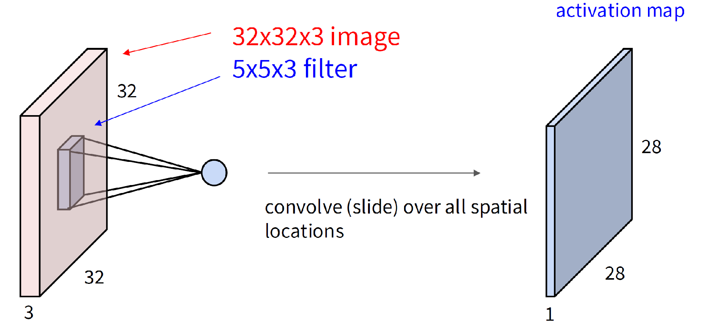

Why are we here?
- ML tools ("AI"?) are ubiquitous, unavoidable, and probably helpful for a lot of problems in sciences
- There is a lot of hype
- The field is flooded with activity: commercial, promotional, and research (and pseudo-research). Important to isolate key ideas and understand their evolution
- Whether you want to use tools "off the shelf", adapt such tools to your needs, or develop new tools, you need to understand (to some degree!) what's under the hood of these tools, and why they work the way they do
- There is an apparent opportunity to provide coverage different in the depth/scope combination from the existing curricular choices
Goals and mindset
- Learn about some important concepts
- We will review ML fundamentals (general and deep learning specific)
- We will try to place the concepts and terms that you probably have heard in some historical, intellectual and technical context
- We will dive into some of the details -- but will be strategic about it
- We will not focus much on the hands-on questions and on implementation
- We will not focus much on results and demos; we re interested in the concepts, ideas, and principles, and you will have to trust me that what we talk about is worthwhile
- Please ask questions, and offer any comments or insights you have. We have plenty of time budgeted for that, and it's important.
- The choices of what to focus on are subjective; they reflect my take on the technical aspects of the field, my philosophical stances, and to a large extent, my own taste and level of familiarity with the material.
Logistics
- We will take 10 minute breaks roughly every 80 min (adjusted for material flow)
- Lunch: noon - 1pm (outside the classroom)
- Today only (Monday) we will need to vacate the room at 11:30am
- Aim to end lectures at 3:15-3:30pm
- have time for Q&A;
- then have 1:1 meetings regarding projects (sign up sheet available)
- Thursday: TA tutorial on adpating language models for scientific (bio) data; will demonstrate hands-on application of some of the concepts we will have covered
- Next Friday: 1:1 meetings to discuss project outcomes/conclusions/issues (to be scheduled)
Assumptions
- Basic familiarity with linear algebra, i.e.:
- Matrix and vector notation, dot product and matrix multiplication
- Superficial familiarity with singular value decomposition
- Probability: basic concepts of mean, variance, covariance matrices; 1D and multivariate Gaussian distributions
- We will talk about joint, marginal and conditional probabilities
- We will talk about expectations, probability density, Bayes rule
- I will occasionally mention PyTorch concepts or show very short snippets; it's fine if you are not familiar
- I will often discuss images and mention concepts in image processing and computer vision. Will try to avoid jargon, but sometimes it's ingrained.
- If not sure what something means, ask!
Who am I?
- Faculty member at TTI-Chicago and (part-time) at the University, since 2008
- Main research area: Computer Vision; also interested in language, robotics, graphics, and "core ML"
- Background: BSc in Math/CS, PhD in EECS
- Teaching this year:
- TTIC 31020: Intro to Computer Vision (Winter)
- TTIC 31280: Models for Representing Images and Video (Spring)
- TTIC 31020: Intro to Computer Vision (Winter)
- Some very recent/current projects: video modeling and understanding
LM for movie editing Sign language foundation models
Roadmap
- Introduction [Monday]
- Review of ML fundamentals
- Mechanics of modern learning,
- Basic neural building blocks and architectural patterns
- Modeling sequences, including language [Monday]
- Transformers [Monday? and probably Tuesday]
- Attention: intuition and technicalities
- Transformer models (language, vision, others)
- Generative models [Tuesday]
- Autoencoders and GANs
- Diffusion and normalizing flows
- Self-supervised learning [Tuesday/Wednesday]
- Modeling complex data and case studies [Wednesday]
- images, videos, point clouds, meshes,…
Review: Supervised learning
- Two basic flavors of ML: supervised and unsupervised
- Supervised learning: map $\mathbf{x}$ to $\mathbf{y}$; learn a model $\widehat{y}=f\left(\mathbf{x};\butheta\right)$ from a training set $\left\{\left(\mathbf{x}_i,\mathbf{y}_i\right)\right\}$
- "Learning" = optimization of a loss function \[ \theta^\ast\,=\,\argmin{\theta} L\left(\theta; \{(\mathbf{x}_i,\mathbf{y}_i)\}\right) \class{rj-hide-1-2}{ \,=\class{rj-enlarge}{\style{--enlarge-fg:#d32f2f}{\sum_i L\left(f\left(\mathbf{x}_i\right),\mathbf{y}_i\right)}} \,+\,\class{rj-enlarge}{R(\theta)} } \]
- Typically, the loss depends on deviation between predicted and true labels for each training example
- There is often also a regularization term on $\theta$
-
Basic example:
multivariate regression, $\vy\in\mathbb{R}^k$;
squared loss $L(\widehat{\vy},\vy)\,=\,\eucnorm{\widehat{\vy}-\vy}^2$;
weight decay regularization, $R(\theta)=\lambda\eucnorm{\theta}^2$
- Underlying assumption: there is a true joint distribution $p(\vx,\vy)$ which generates the training set and the (future, unseen) test examples of $(\vx,\vy)$; we are modeling the conditional $p(\vy|\vx)$
Review: Unsupervised learning
- Unsupervised learning: only have a set of examples $\{\vx_i\}$, no "labels"; want to learn something about the data (actual sample at hand) or the data distribution responsible, $p(\vx)$
- Density estimation: model $p(\vx;\butheta)$
- Likelihood estimation: given $\vx$ how high is $p(\vx;\butheta)$?
- Sampling: draw a new $\vx'\,\sim\,p$
- Clustering: organize examples into groups (not really "learning", perhaps, since no generalization?)
- Dimensionality reduction: suppose $\vx\in\mathbb{R}^D$; find mapping
\[
r: \mathbb{R}^D\;\to\;\mathbb{R}^d,\quad d\ll D
\]
such that $\{\vx'_i=r\left(\vx_i\right)\}$ has some desired properties, w.r.t. the original data $\{\vx\}$ or otherwise
- Reconstruction: $\eucnorm{r(\vx)-\vx}$ is small
- Visualization (for $d\le 3$): plotting $\{r(\vx)\}$ reveals some useful information to human eyes
- Just reducing computation without hit to performance
- Many of these goals can be a pretext for learning something else useful for "downstream tasks" -- more on this later!
Other forms of learning
- Reinforcement learning:
Agents interact with the world (environment);
Importantly, their action can modify the environment!
Receive rewards (not necessarily after every interaction);
Need to learn a policy mapping internal state, goals and world observation into action step(s).

- Semi-superwised: training data consiste of labeled $\{(\vx,\vy)\}$ and unlabeled $\{\vx'\}$ data.
- Why would it help Unlabeled data give us information on $p(\vx)$ and thus ultimately a better understanding of $p(\vx,\vy)$ and better estimation of $\pc{\vy}{\vx}$ ?
- Weakly supervised: training data is labeled $\{(\vx,\vy')\}$ but the labels $\vy'$ are some (noisy, partial,…) function of real labels $\vy$
- Active learning:
Typically a form of supervised learning, with the learner requesting labels for certain examples
Brief history of ML
- XIX century and before: optimizing functions based on data (e.g., astronomy)
- 1950s: perceptrons (Rosenblatt)
- 1960s: rule-based systems
- 1960s-1970s: convergence with statistics; emergence of theory of learning; hidden Markov models
- 1980s: origins of "deep learning" -- backpropagation, convolutional networks (concepts central today)
- 1990s: Kernel methods (SVMs), ensembles (boosting, etc.); emergence of heavy compute in ML
At the same time, continuing development of neural networks. - 2000s: benchmarks become influential; lots of "feature engineering" in vision, speech, language. ML based models become practical and (at scale) start being competitive.
- Mid 2000s-early 2010s: graphical models are dominant -- conditional random fields, etc., including efforts on "deep learning"
- 2012: ImageNet competition is won by AlexNet; beginning of modern deep learning era. Within 4-5 years CNNs dominate many fields.
- 2016: Transformers paper published (takes a couple of years to catch on).
Autoencoders, VAEs, GANs - 2020: beginning of generative model craze; LLMs and text-to-image diffusion models …
Linear and non-linear models
- The most basic ML method (?): nearest neighbors. Works great at scale -- but is also difficult to scale.
- Next most basic: linear models, $f(\vx)\,=\,\ip{\vw}{\vx}\class{rj-hide-0-0}{\,+b}\class{rj-hide-0-1}{\,=\,\ip{\vw}{[1,\vx]}}$
- Obviously very limited; but easy to extend using nonlinear feature transform
- Example: regression with polynomial features up to $k$-th order \[f(x)\,=\,\ip{\vw}{[1,x,x^2,x^3,\ldots,x^k]}\]
- Not linear in the original $x\in\mathbb{R}$ but linear in a feature vector $\bphi(x)=[1,x,x^2,\ldots,x^k]\in\mathbb{R}^{k+1}$, and very importantly, linear in $\vw$
- We can design feature transforms and so control the complexity of the model -- perhaps making it too complex?
Linear
3rd order
5th order
10th order
Review: model complexity, overfitting and underfitting
\[ \btheta^\ast = \argmin{\btheta} L\left(\btheta;\left\{(\vx_i,\vy_i)\right\}\right) \]- Model fitting: finding of the optimal $\btheta^\ast$
[For now, let's assume we can actually find the training set optimum] - Underfitting: the model can not adequately "explain" the training data (large training error)
- Overfitting: the model explain training data very well but fails to explain new (test) data; a large gap between training and test errors
Features in ML
- Much of the ML research (in "core ML", but especially in application areas -- vision, speech, NLP, graphics,…) in 1990s-2010s: "feature engineering"
- Example: Histograms of oriented gradients (HoG) for image understanding
- Designed for person detection; quickly adapted for hundreds of tasks (original paper cited 50k times)
- Key transition to deep learning: features can be learned, not hand-crafted
Deep learning
\[ f_y(\vx;{\color{green} \btheta_1}, {\color{red} \btheta_2},\ldots, {\color{blue} \btheta_L} )\,\class{rj-hide-0-0}{=}\,\class{rj-hide-0-2}{{\color{blue} F_L}( F_{L-1}( \cdots} \class{rj-hide-0-1}{{\color{red} F_2}(} \class{rj-hide-0-0}{{\color{green} F_1}(\vx;{\color{green} \btheta_1})} \class{rj-hide-0-1}{;{\color{red}\btheta_2})} \class{rj-hide-0-2}{\cdots );{\color{blue} \theta_L} )} \]- A system that uses a hierarchy of features of the input, learned end-to-end jointly with the predictor.
- Each $F_k$ is a layer of the deep model
- ${\color{blue} F_L}$: the predictor, outputs the estimated $\widehat{\vy}$
- The layers are not always explicitly delineated in the model (network) architecture;
they represent the topological sort of the directed acyclic graph of computation - A basic form: multi-layer neural network, or multi-layer perceptron
- Original (single-layer) perceptron The hopes were dashed following Minsky and Pappert book "Perceptrons" which "proved" that this is a dead end; critique mostly focused on linear classifier, but also poo-pooed multi-layer networks and backpropagation. : 1950s
- From “Mechanisation of Thought Process”, 1959: The Navy revealed the embryo of an electronic computer today that it expects will be able to walk, talk, see, write, reproduce itself and be conscious of its existence. Later perceptrons will be able to recognize people and call out their names and instantly translate speech in one language to speech and writing in another language, it was predicted.

Multi-layer perceptron
- Input: $\vx=[x_1,\ldots,x_d]\in\mathbb{R}^d$
- First layer: $m$ hidden units with activation function $h$
unit $j$ computing \[a^{(1)}_j\,=\,h\left(\sum_i{\color{green} w^{(1)}_{i,j}}x_i+{\color{green}b^{(1)}_j}\right) \] - Second layer: $c$ output units \[a^{(2)}_k\,=\,h\left(\sum_j{\color{red} w^{(2)}_{j,k}}a^{(1)}_j+{\color{red}b^{(2)}_k}\right) \]
- Or there could be more units!
- Note that we are counting layers of weights, not layers of units

Why "neural networks"?
- The basic hidden unit operation matches the McCulloch-Pitts model, ca. 1943
- Real neurons are more complex (e.g., rate coding) and real neural networks are not organized in "layers"
Activation functions
- A large zoo of activation functions evolved over decades
- Default choice: use ReLU; try GELU (especially with transformers)
Feed-forward networks
- The two-layer perceptron, in matrix form: \[ \mathbf{f}(\vx)\,=\,\ip{{\color{red}\mathbf{W}_2}} {h\left( \ip{{\color{green} \mathbf{W}_1}}{\vx}+{\color{green} \mathbf{b}_1} \right)} \,+\,{\color{red}\mathbf{b}_2} \] where $h$ is applied element-wise
- Dimensions, assuming we have $m$ hidden units and $C$ outputs \[ \vx\in\mathbb{R}^d, {\color{green}\mathbf{W}_1}\in\mathbb{R}^{m\times d}, {\color{red}\mathbf{W}_2}\in\mathbb{R}^{C\times m}, {\color{red}\mathbf{b}_2}\in\mathbb{R}^C, {\color{green}\mathbf{b}_1}\in\mathbb{R}^m \]
- Learning the model means finding $ \btheta = \left[{\color{green}\mathbf{W}_1}, {\color{red}\mathbf{W}_2}, {\color{red}\mathbf{b}_2}, {\color{green}\mathbf{b}_1}\right]$ (weights and biases) that achieve low loss on the training data $(\mathcal{X},\mathcal{Y})$
- A general form of learning: optimization using gradient descent!
Make a guess $\btheta^{(0)}$ for $\btheta$; Compute loss gradient Gradient of a function $f:\vx\in\mathbb{R}^d\to\mathbb{R}$ is the vector of partial derivatives \[\nabla_\vx f(\vx')\,=\,\left[\frac{\partial f}{\partial x_1}(\vx'),\ldots, \frac{\partial f}{\partial x_1}(\vx') \right]. \] It is the direction of steepest ascent for the value of $f$ at $\vx'$. $\nabla_\btheta L(\btheta;\mathcal{X},\mathcal{Y})$;
Make a step in the opposite direction (want to reduce loss), $\btheta^{(1)}\,=\,\btheta^{(0)}-\eta\nabla_\btheta L(\btheta;\mathcal{X},\mathcal{Y})$; and continue until convergence - How to compute $\nabla$? What's $\eta$? When do we stop? Much more on this soon!
Model outputs: classification and regression
- If the target is $C$-dim regression: a reasonable loss is $L(f;\vx,\vy)\,=\,\eucnorm{f(\vx)-\vy}^2$.
- What if we are doing $C$-way classification?
Intuition: $f_c(\vx)$ is a measure of "match" of $\vx$ to class $c$; but what are the units and how do we use them to classify? - If we just want to classify, units are not important! Simply take $\argmax{c} f_c(\vx)$
- For classification, the only thing that matters is the relative value logits $f_c(\vx)$ across classes $c$; no need for softmax.
- We can measure classification error of function $f$ (our MLP) on an example $(\vx,y)$: \[ L(f;\vx,y)\,=\, \begin{cases} 0, & \text{if}\,\argmax{c}f_c(\vx)\,=\,y,\\ 1 & \text{otherwise} \end{cases} \]
- Unfortunately it is not differentiable -- can not learn with it!
Softmax
- What if we want to convert network outputs $f_1,\ldots,f_C$ to posterior $p\left(c|\vx\right)$? Use softmax: \[\widehat{y}_k\,=\,\widehat{p}\left(k|\vx\right)\,=\,\frac{\exp\left(f_k(\vx)\right)} {\sum_{c=1}^C \exp\left(f_c(\vx)\right)} \] (cf. Boltzmann or Gibbs distribution)
- Softmax output is guaranteed to yield a valid probability distribution over $C$ classes
- The "raw" $f_c$ values are called logits; the softmax transformation converts (calibrates) logits into probabilities based on their relative value
- Example: \[ [\class{rj-alert-3}{0.1},\,\class{rj-alert-3}{0.2},\, 0.4,\, 0.8,\, 1.6,\, \class{rj-alert-4}{3.2}]\,\to\, [\class{rj-alert-3}{0.031},\, \class{rj-alert-3}{0.034},\, 0.042,\, 0.063,\, 0.140,\, \class{rj-alert-4}{0.690}] \] [check: what happens if you add a constant $a$ to logits across classes?]
- Let's now use softmax to set up a differentiable loss function
Cross-entropy
- Intuition: loss should measure how good our outputs (logits) $f_1(\vx),\ldots,f_C(\vx)$ is given the true $y^\ast\in[C]$
- Log-loss: the negative (estimated) probability of the correct class $L(f;\vx,y^\ast)\,=\,-\log f_{y^\ast}(\vx)$
- Make $\vy\in\class{rj-enlarge}{\{0,1\}}^C$ a "one-hot" encoding of the class label, $y_c=1$ if $c=y^\ast$ and 0 otherwise. Apply softmax to get \[\widehat{y}_c(f(\vx))\,=\,\frac{\exp\left(f_c(\vx)\right)} {\sum_j\exp\left(f_j(\vx)\right)} \] Then the loss can be written as \[L(f;\vx,\vy)\,=\,-\sum_c y_c\log\widehat{y}_c(f(\vx)) \]
- This is the cross-entropy between true (one-hot) label distribution $\vy$ and the estimated $\widehat{\vy}$; if $\log$ is base 2, it is measured in bits
- Note: it is perfectly well defined when $\vy\in\class{rj-enlarge}{[0,1]}^C$, e.g., if true labels are uncertain (inherently or due to measurement noise)
Loss functions
- Multiclass classification: $\vx\to y\in[1,\ldots,C]$ or in other words $\to \vy\in\mathbb{S}_C$ $C$-dim simplex: $\vy\in[0,1]^C$ s.t. $\sum_iy_c\,=\,1$
- Multilabel classification: $\vx\to\vy\in[0,1]^C$ (no sum constraint)
$\vx\,\to\,[0,0,1,0,1,0,0]$ → $\vx$ has labels 3 and 5 (belongs to classes 3 and 5) - Examples: a patient with multiple conditions; an image with multiple object categoriees; document discussing multiple topics.
- We can use softmax for multilabel, but it doesn't make much sense.
- Typical choices instead involve enforcing $[0,1$ range on each output dimension. Let $f_c$ be the logit (model output value) for $i$-th class;
- Sigmoid loss This is mathematically equivalent to using softmax for two categories ("$c$" or "not $c$") where $f_c$ is a degree of $c$ness. The shape of the sigmoid function (also known as the logistic function):
 :
\[\widehat{y}_c\,=\widehat{p}(y_c=1|\vx)\,=\,\frac{1}{1+\exp\left(-f_c\right)}\qquad
\class{rj-hide-0-3}{\Rightarrow\qquad L(\widehat{\vy},\vy)\,=\,-\sum_cy_c\log \widehat{y}_c}
\]
:
\[\widehat{y}_c\,=\widehat{p}(y_c=1|\vx)\,=\,\frac{1}{1+\exp\left(-f_c\right)}\qquad
\class{rj-hide-0-3}{\Rightarrow\qquad L(\widehat{\vy},\vy)\,=\,-\sum_cy_c\log \widehat{y}_c}
\]
- Use square loss (no probabilistic interpretation) \[L(\widehat{\vy},\vy)\,=\,\sum_c\left(\widehat{y}_c\,-\,y_c\right)^2\]
- Sigmoid loss This is mathematically equivalent to using softmax for two categories ("$c$" or "not $c$") where $f_c$ is a degree of $c$ness. The shape of the sigmoid function (also known as the logistic function):
- Both are differentiable
Dealing with imbalanced categories
- In many real world scenarios, categories have very different frequencies, and some examples are a lot easier to classify than others
- Focal loss: reduce the contribution of easiest examples to the loss
- Asymmetric loss: assign a different weight (hyperparameter to tune) to losses on different classes
Data augmentation
- An important technique when you have relatively scarce data: augment the training set. Synthesize new training examples by transforming the original data.
- A commonly used set of transforms:
from torchvision.transforms import v2
Can compose transforms!
- Careful: some transforms may alter the ground truth (e.g., if you rotate the image, remember to rotate the segmentation map!) and some may be inappropriate given the task
Blue-throated macaw
Blue and yellow macaw
Gradient descent
- We have our surrogate loss: cross-entropy (instead of classification error which we really care about) \[ \begin{align} \widehat{p}(y=c|\vx)\,=\,\exp(f_c(\vx))/\sum_j\exp(f_j(\vx))\qquad \Rightarrow L(f;\vx,y)\,&=\,-\log\widehat{p}(y|\vx)\\ &=\,-f_y(\vx)+\log\sum_c\exp\left(f_c(\vx)\right) \end{align} \]
- We use a loose notation $L(f,\cdots)$ to mean $L$ as a function of all the weights and biases in $f$
- Our parameters (optimization "iterate") are a bunch of matrices and vectors \[\mW_1\,=\, \begin{bmatrix} \vw_{1,1}\\ \ldots\\ \vw_{1,m} \end{bmatrix},\qquad \vb_1\,=\, \begin{bmatrix} b_{1,1}\\ \ldots\\ b_{1,m} \end{bmatrix},\qquad \begin{bmatrix} \vw_{2,1}\\ \ldots\\ \vw_{2,C} \end{bmatrix},\qquad \vb_2\,=\, \begin{bmatrix} b_{2,1}\\ \ldots\\ b_{2,C} \end{bmatrix} \]
- Now we need to calculate $\nabla L(f,\vx,y)$; what does that look like? Let's focus on partial gradients, \[\frac{\partial L(\vx,y)}{\partial \mW_1},\quad \frac{\partial L(\vx,y)}{\partial \vb_1},\quad \ldots \]
Gradient of MLP loss
- Recall:
- Let's calculate! \[ \frac{\partial L(\vx,y)}{\partial \mW_1}\,=\, \class{rj-hide-0-0}{ -\vw^T_{2,y} } \class{rj-hide-0-1}{ \frac{\partial h(\ip{\mW_1}{\vx}+\vb_2)}{\partial\left[\ip{\mW_1}{\vx}+\vb_2)\right]} } \class{rj-hide-0-2}{ \underbrace{\frac{\partial \ip{\mW_1}{\vx}}{\partial \mW_1}}_{\class{rj-hide-0-3}{\text{3D tensor!}}} } \class{rj-hide-0-3}{\,+\ldots\,} \]
- We have a chain mapping -- in general terms, like this
Let's try to use the chain rule of differentiation!
Chain rule for gradients
- Computing partial gradients: \[\nabla_{\mathbf{v}}z=\frac{\partial z}{\partial \mathbf{v}}\,=\,\frac{\partial h(\mathbf{v})}{\partial \mathbf{v}} \] \[ \class{rj-hide-0-0}{\frac{\partial z}{\partial u_i}\, =\,\sum_j\frac{\partial z}{\partial v_j} \frac{\partial v_j}{\partial u_i}\;\Rightarrow\; \nabla_{\mathbf{u}}z\,=\,\overbrace{\left(\frac{\partial \mathbf{v}}{\partial \mathbf{u}}\right)^T}^{\text{Jacobian}}\nabla_{\mathbf{v}}z } \] \[ \class{rj-hide-0-1}{ \frac{\partial z}{\partial x_k}\, =\,\sum_q\frac{\partial z}{\partial u_q} \frac{\partial u_q}{\partial x_k}\;\Rightarrow\; \nabla_{\mathbf{x}}z\,=\,\left(\frac{\partial \mathbf{u}}{\partial \mathbf{x}}\right)^T\nabla_{\mathbf{u}}z } \]
Stage-wise computation
- Let's zoom in a bit on the computation inside an MLP \[ \begin{align} \vx,\,\mathbf{W}_1,\mathbf{b}_1\,&\to\,\mathbf{a}_1\,=&\,\ip{\mathbf{W}_1}{\vx}+\mathbf{b}_1\\ \mathbf{a}_1\,&\to\,\mathbf{z}_1\,=&\,h(\mathbf{a}_1)\\ \mathbf{z}_1,\,\mathbf{W}_2,\mathbf{b}_2\,&\to\,\mathbf{a}_2\,=&\ip{\mathbf{W}_2}{\mathbf{z}_1}+\mathbf{b}_2\\ \mathbf{a}_2,\,y\,&\to\,L\,=&\,-\ip{\mathbf{e}_y}{\mathbf{a}_2}\,+\, \log \left[\ip{\mathbf{1}}{\exp(\mathbf{a}_2)}\right]\\ \end{align} \]
- Here $\mathbf{e}_j$ is a one-hot vector for $j$, $\mathbf{1}$ is a vector of ones;
$\va_1$ is the "raw" value in layer 1 (before $h$), $\vz_1$ is the output ("activation") of layer 1, etc. - Now we have, e.g., \[\nabla_{\mathbf{z}_1}L\,=\,\left(\frac{\partial \mathbf{a}_2}{\partial \mathbf{z}_1}\right)^T\nabla_{\mathbf{a}_2}L, \] \[ \class{rj-hide-0-1}{ \nabla_{\mathbf{W}_1}L\,=\,\sum_j\left(\nabla_{\mathbf{W}_1}z_{1,j}\right) \left(\nabla_{\mathbf{z}_1}L\right)_j } \]
- So what is $\nabla_{\mathbf{W}_1}z_{1,j}$ like and how do we compute it?
Backpropagation [1]
- Consider a node $\#t$ in the network (ignore biases)
- $t$ receives input from $I(t)\,=\,\{i_1,\ldots,i_S\}$
- Computation in the node: \[a_t\,=\,\sum_{j\in I(t)}w_{j,t}z_j,\qquad z_t\,=\,h(a_t)\]
- $t$ sends output to $O(t)\,=\,\{o_1,\ldots,o_R\}$
- Eventually the "descendants" of $z_t$ produce logits $f_1,\ldots$
- The loss $L$ is computed from the logits
- The loss $L$ depends on $w_{j,t}$ only through $a_t$: \[ \frac{\partial L}{\partial w_{j,t}}\;=\; \frac{\partial L}{\partial a_t} \frac{\partial a_t}{\partial w_{j,t}} \class{rj-hide-0-8}{ \;=\;\frac{\partial L}{\partial a_t}z_j } \]
Backpropagation [2]
- Compute the (backward) gradient flow. Recall: \[a_t\,=\,\sum_{i\in I(t)}w_{i,t}h\left(a_i\right)\]
- Notation: $d_t\,=\,\frac{\partial L}{\partial a_t}$. $d_{f_c}$ is easy (?)
- The flow arrives to unit $t$ from $O(t)$: \[ \begin{align} d_t\,&=\,\frac{\partial L}{\partial a_t}\,=\, \sum_{o\in O(t)}\class{rj-alert-5-6}{\frac{\partial L}{\partial a_o}} \frac{\partial a_o}{\partial a_t}\\ &\class{rj-hide-0-4}{=\, \sum_{o\in O(t)}\class{rj-alert-5-6}{d_o}w_{t,o}h'\left(a_t\right) } \class{rj-hide-0-6}{ \,=\,h'\left(a_t\right)\sum_{o\in O(t)}d_ow_{t,o} } \end{align} \] where $h'(a_t)$ is the derivative of the activation function $h$ evaluated at the value $a_t$ (we will want a differentiable $h$)
- Note: we can backprop all the way to the inputs (for now unclear why we'd want to)
Backpropagation [3]
- We just need the (directed, acyclic) computation graph in which each node $t$ has its $I(t)$ and $O(t)$
- In practice we usually organize nodes in $T$ layers; compute forward pass (caching activations) \[ \begin{align} \class{rj-hide-0}{\mathbf{a}_1} & \class{rj-hide-0}{=\ip{\mathbf{W}_1}{\vx}+\mathbf{b}_1\qquad\qquad} & \class{rj-hide-0}{\mathbf{z}_1} & \class{rj-hide-0}{=h(\mathbf{a}_1)} \\ \class{rj-hide-0-1}{\mathbf{a}_2} & \class{rj-hide-0-1}{ =\ip{\mathbf{W}_2}{\mathbf{z}_1}+\mathbf{b}_2} & \class{rj-hide-0-1}{\mathbf{z}_2} & \class{rj-hide-0-1}{=h(\mathbf{a}_2)} \\ \class{rj-hide-0-2}{\ldots}\\ \class{rj-hide-0-2}{\mathbf{a}_{T-1}} & \class{rj-hide-0-2}{ =\ip{\mathbf{W}_{T-1}}{\mathbf{z}_{T-2}}+\mathbf{b}_{T-1}} & \class{rj-hide-0-2}{\mathbf{z}_{T-1}} & \class{rj-hide-0-2}{=h(\mathbf{a}_{T-1})} \\ \class{rj-hide-0-3}{\mathbf{a}_{T}} & \class{rj-hide-0-3}{=\ip{\mathbf{W}_{T}}{\mathbf{z}_{T-1}}+\mathbf{b}_{T}} & \class{rj-hide-0-3}{\mathbf{z}_{T}} & \class{rj-hide-0-3}{=\mathbf{a}_{T}} \end{align} \]
- Backward pass: using the backprop equations, using cached $\va$ and $\vz$ for layers above \[d_t\,=\,h'(a_t)\sum_{j\in O(t)}d_jw_{t,j},\qquad \frac{\partial L}{\partial w_{i,t}}\,=\,d_tz_i \]
- For our MLP layers, we have (with some math): \[\ldots\quad \mathbf{d}_{t}\, =\,h'(\mathbf{a}_{t})\ast\left(\mathbf{d}_{t+1}^T\mathbf{W}_{t+1}\right); \qquad\nabla_{\mathbf{W}_{t}}L\, =\,\mathbf{d}_{t}\otimes\mathbf{z}_{t-1}\quad\ldots \] $h'(\mathbf{a})$: element-wise derivative; $\mathbf{u}\otimes\mathbf{v}$: outer product; $\mathbf{u}\ast\mathbf{v}$: element-wise product
Modularity of forward/backward computation
- You are unlikely to need to derive and implement backpropagation, since there are so many existing building blocks in PyTorch
import torch
import torch.nn as nn
class MLP(nn.Module):
def __init__(self, d_in, d_hid, d_out):
super().__init__()
self.net = nn.Sequential(
nn.Linear(d_in, d_hid),
nn.ReLU(),
nn.Linear(d_hid, d_out),
)
def forward(self, x):
return self.net(x)
loss=loss_fun(net(x),y)
loss.backward()
opt.step()
opt.zero_grad()
If only want to eval (no backward pass), can save some space and compute:
with torch.no_grad():
pred=self.model(x)
loss=self.loss_func(pred,y)
- PyTorch's
autogradwill automatically set up gradient (backprop) calculations for almost any forward pass definition!
Computational graph and autograd
def f(x1, x2):
a = x1 * x2
y1 = log(a)
y2 = sin(x2)
return (y1, y2)
def g(y1,y2):
return y1 * y2
- Any
torch.Tensorcan sayrequires_grad=Trueto be attached to the computational graph - Most operations available in
torchalready have thebackward()method defined
Modular multi-layer networks
- A (more) general definition of a multi-layer network: for each layer, define the parametric forward function \[\mathbf{a}_l\,=\,F_l\left(\mathbf{z}_{l-1};\btheta_l\right)\] and the activation \[\mathbf{z}_l\,=\,h\left(\mathbf{a}_l\right)\]
- The last layer will (presumably) yield predicted output $\mathbf{f}(\vx)$
- Note: softmax is part of the loss function, not the network!
- Most of the time, if your definition of $F_l$ uses existing building blocks in PyTorch, it will be automatically It might be inefficient or buggy, but probably it will be OK! endowed with the corresponding backward computation
- When you really need something bespoke, you write your own
backwardmethod - Then you need to define a (differentiable) loss function, yielding a scalar output;
loss=loss_func(model(x),y)will compute the feed-forward pass of the model on $\vx$, compute the loss relative to the ground truth $\vy$ , and keep track of all you need for backpropr - Finally,
loss.backward()will compute the gradient; you then use it to update the model. More on this soon!
So why is "deep learning" so successful?
- A good fit to the hardware advances in recent decades: GPUs, faster memory, and generally more affordable fast compute and storage
- Modular and general: a relatively small number of architectures, and more or less a universal learning algorithm (gradient descent), work very well for a huge number of problems and domains
- Good software: increasingly standardized frameworks.
- Currently dominant: PyTorch, JAX
- Prevalent at some point in the past: Caffe, Theano, TensorFlow
- Autograd makes it incredibly easy to build and experiment with network archtectures
- Standard architectures and software makes it incredibly easy to share models and adapt them as needed
- Finally: there may be some fundamental properties of massively over-parametrized models that enable good learning and generalization. We don't quite understand that yet.
Convolutional networks: motivation
- A prototypical "vision" task (1970s-2010s): image classification, e.g., MNIST
- Consider a linear classifier applied to a 32x32 pixel (color) image: $\vx\in\mathbb{R}^{3072}$
- It does not respect spatial structure in the image (what if we permute the pixels in a fixed way?)
- More importantly: suppose we have a hidden layer with 100 units. Then we need 307,300 parameters for that layer!
- Idea: use a local unit that only sees, say, 5x5 window of pixels
- 76 parameters (5x5x3+1) -- but seems like we'd need to tile the whole image with these?
Convolutional map
- Convolutional layer: a single filter (aka kernel) is
convolved
Technically, convolution implies flipping the filter, otherwise it's "correlation; in practice the distinction is irrelevantwith the image
- The output is a feature map: if input (image, or the output of a previous layer) is $W$x$H$, filter is $k$x$k$, the map is $(W-k+1)$x$(H-k+1)$
- We can make the map same size as input by
padding
Normally $k$ is odd, and we pad by $\frac{k-1}{2}$(typically with zeros)

 Padding=1
Padding=1
- When the input map has $C$ channels (number of feature values computed per spatial location) the filter is $k$x$k$x$C$; convolution is still only spatial
- When the input the image, $C$=3 for the three colors (RGB); what might $C$ be for the input to subsequent layers?

Convolutional layers
- Suppose we have a map of size $W$x$H$x$C$, and $m$ filters, each $k$x$k$x$C$;
also suppose we pad this map to get same size output of convolution - Convolving each with the input will produce a $W$x$H$x1 map; stacking them together will yield a $W$x$H$x$m$ output feature
tensor
If we have a batch of $B$ images, everything becomes 4D; $B$x$W$x$H$x$C$ input gets mapped to $B$x$W$x$H$x$m$ output
- The parameters for a convolutional layer with $m$ filters, sitting on top of a $C$-channel input:
A $C$x$k$x$k$x$m$ tensor of weights, and a $m$-dim bias vector - What about activation functions? These are applied per-element (typically a ReLU)
Convolutional layers
- Can we have $k=1$?
Suppose we have $m$ 1x1 filters; each filter is just a vector in $\mathbb{R}^C$. - At each position, we compute $m$ dot products in $\mathbb{R}^C$ and stack them into outputs in $\mathbb{R}^m$.
- What about $W$x$H$ "filter"? If we don't pad, this is just an MLP!
- What if we remove the activation functions? [thought exercise]
- So: a sequence of conv layers, followed by ReLU, is a convolutional network (convnet). It can be learned with gradient descent (using backpropagation to compute the gradient).
- How do we get an output (e.g., for the 10 MNIST classes)? An issue: the feature map is a tensor, and we just want a vector $\mathbf{f}\in\mathbb{R}^{10}$
- Solution: A "fully connected layer" after the last conv layer, with 10 units. Flatter the feature map to make it a vector, too (like in MLP).
- Suppose the last conv layer is $C$x$W$x$H$, then we need $10\cdot C\cdot W\cdot H+10$ parameters for the fully connected layer.
Receptive field vs. depth in convnets
- Receptive field of a unit in a network: the area in the input that affects the unit's activation
- Borrowed from visual RFs in neuroscience, usually measured in arcs of visual field. There are other types of RFs, e.g., spectro-temporal auditory RFs that respond to certain frequency and time (ltency) ranges.
- We can consider the RF in the layer input, and in the (original) network input (the image)
- The RF size grows with layers, as long as $k>1$, but very slowly!
- Solution: strides
- Originally common: pooling layers (max or average over a window), e.g., 2x2 window with stride 2
- More common today: strided convolutions


Max pooling
Strided conv
- Now the receptive field grows with depth much faster!
Brief history of convnets
- 1979: Neocognitron (Fukushima) -- convolutional network, but no backprop (unsupervised learning of filters)
- 1989: LeNet (LeCun et al.): 2 conv layers, 12 filter per layer; fully connected layer with 30 units;
tanhactivations; trained with backprop on 7291 images. - 1995: LeNet-5 achieves state of the art classification on handwritten digits. 2 conv layers (with sub-sampling), 3 FC layers, sigmoid activations. More or less like today's convnets!
- 2012: AlexNet wins ImageNet challenge. 5 conv layers, 2 FC layers; ReLU; model parallellism (due to hardware limits). Trained on 1.3M images, 1000 classes.
- 2014: VGG16. Small kernels Recall So instead of a 7x7 conv we can stack three 3x3 conv layers; 27$C$ weights instead of 49$C$. More importantly, standardizes design; one less hyperparameter to tune. Instead focus on depth. , more depth.
 LeNet-5
AlexNet
VGG-16
LeNet-5
AlexNet
VGG-16
- 2015: ResNet…
Computation in convnets
- Some data for AlexNet:
- Most parameters are in fully-connected layers
- Most computation and memory is in conv layers
Regularization: dropout
- Concern: "co-adaptation"; units over-relying on other units and hyper-specializing (thus overfitting)
- Consider: we want to detect cats. Each unit in a huge network learns to recognize one of 1000 cats in the data set.
- Solution: random Not to be confused with DropConnect, in which random weights are zero out (severing the synaptic connections, as it were); dropout zeroes out entire rows in weight matrices.
DropConnect is not widely used today. dropout
- In each mini-batch, zero out activations of a unit with probability $p$, so it can not contribute to the
- No dropout at test time; so we need to scale the activations by $p$ to match the expected level in the receiving unit
- Interpretation: with dropout we sample each time from a huge pool of networks, and are learning an ensemble of models with shared parameters
Regularization: batch normalization
- A concern: with small mini-batches, their statistics (1st and 2nd momentum) will be inconsistent, making SGD harder
- Solution: force consistency, by batch normalization
- Compute activation (feature) stats for the unit $f$ across minibatch (across samples and, in a convnet, across spatial dimensions) \[\mu_f\,=\,\frac{1}{m}\sum_i f_i,\qquad \sigma^2_f\,=\,\frac{1}{m}\sum_i \left(f_i-\mu_B\right)^2 \]
- Normalize (like $z$-scoring in statistics) \[\widehat{f}_i\,=\,\frac{f_i-\mu_f}{\sqrt{\sigma^2_f}+\sigma}\]
- Finally, use (learnable) per-unit "location and scale" parameters $\gamma_f$, $\beta_f$ instead of original $f$ \[\tilde{f}_i\,=\,\gamma_f\widehat{f}_i+\beta_f\]
Image classification
- Often we want a single output for the input image
- Could be scalar or vector, but not associated with image spatial dimensions
- Classification: normal/abnormal patterns; species identification; material recognition;…
- Regression: age of a specimen; probability distribution of outcomes; set of angles for estimated body pose
- Approach 1: attach a fully connected layer to (flattened) conv map.
- Good: can be sensitive to spatial patterns (location of things int he image)
- Bad: lots of parameters; requires resizing inputs to fixed size so the last convent comes out at the expected size
- Approach 2: use global pooling (average or max) to collapse $C$x$W$x$H$ conv map to a vector in $\mathbb{R}^C$
- Good: much more economical; in principle can accept variable size images
- Bad: may be less sensitive to spatial patterns (mitigated when the RF of units is large!)

Predicting label maps
- Often we want to predict something for every pixel in the input image
- Example: "semantic segmentation" -- assign to every pixel a class
- Suppose we have $k$ pixel classes
- Make the last conv layer have $k$ filters; resize (upsample) the map to original resolution
- Compute the loss as the average loss per pixel
- If the last few layers use 1x1 convolutions, we basically have MLP (same one across locations) classifying pixels from the features computed by the last "real" conv layer
- Problem: resizing 4x or 8x really loses information. One solution: dilated (a-trous) convolutions
- Combines rapid growth of RF with retaining full resolution
 DeepLabV3, Google
Dilated convolution
DeepLabV3, Google
Dilated convolution
Skip-layer connections
- Recall the layerwise computation: $\va_t\,=\,F\left(\vz_{t-1}\right)$
- We can forward activations $\vz_t$ to layers beyond $t+1$; all we need is a graph with no cycles. E.g., make a layer directly look not only at the layer before it but also the layer before that (two layers back): \[ \va_t\,=\,F\left(\vz_{t-1},\,\class{rj-alert-1}{\vz_{t-2}}\right) \]
- Everything in our backprop (and autograd) machinery still works fine!
- Why would we want to do it?
- One reason: features computer earlier may be directly useful in subsequent layers. This allows us to add information with new layers, instead of aggregating it
- A technical reason: it makes it easier to train deeper networks
- The vanishing gradient problem: gradients in earlier layers account for exponentially increasing number of paths. This reduces the gradient magnitude making it hard(er) to train very deep networks.
U-Net
- U-Net: U-Net: Convolutional Networks for Biomedical Image Segmentation, by Ronneberger et al., 2015 (120k citations)
- First, reduce resolution (trade spatial dimensions for channels). This is a kind of encoder
- Then start recovering resolution and reducing channels -- decoding, ultimately yielding an image-like object with label per pixel)
- Use skip-connections from corresponding resolution in the encoder arm
- Popular today because of its use in image diffusion models [later]
U-Net variants
- Many variants of U-Net in different contexts.
- Example (Wang, Koch et al., Nature 2020): using U-Net for "inverse problems" like super-resolution
- Predict intermediate outputs (super-resolution at different scales), attach additional losses to those.
- Technique known as "deep supervision"; originally proposed to help train deep networks. Not necessary today (will see soon why) but may help convergence speed
Training very deep networks
- "Very deep" is an evolving notion; 7 in 2012, 19 in 2015, 150-300 (and sometimes 1000) today
- Benefits of depth: better performance!
- Cost and benefit: need/can use more data
- Cost of depth: compute, memory, and time
- Another cost: turns out it is increasingly difficult to optimize deep networks
- Not an overfitting issue (training error is high as well as test)
- Clearly a problem of optimization: a deep network that just adds a bunch of pass-through (identity) layers should do as well as a shallow one
Residual networks
- Intuition: let's help the network by incorporating identity into the network
- A skip-layer connection, but with sum instead of concatenation
- A residual block; chaining these creates a path from output/loss directly to each layer
- With very deep networks (50, 100 layers) it is helpful to use bottleneck residual blocks, using 1x1 convolutions to reduce computation
- Within each block: reduce dimension, convolve, lift back
- This resolves the optimization difficulty; now (especially with more data) deeper networks beat shallower ones
- Many subsequent innovations but the fundamental approach endures today (including in transformers)
ResNet architecture(s)
- No pooling layers; all resizing done by (learned) strided convolutions
- Number of channels is doubled every time resolution is halved
- The only fully connected layers is the classifier
Review: SGD
- Recall: the training loss is a sum over example losses $$ \begin{align} L\left(\butheta;\left\{(\vx_i,\vy_i)\right\}\right)\,&=\,\frac{1}{N}\sum_{i=1}^N \class{rj-enlarge-persist rj-popover-losspop}{L\left(\butheta;\vx_i,\vy_i\right)}\\ \class{rj-hide-0-0}{ \frac{\partial}{\partial \butheta}L\left(\butheta;\left\{(\vx_i,\vy_i)\right\}\right)}& \class{rj-hide-0-0}{\,=\, \frac{1}{N}\sum_{i=1}^N \frac{\partial}{\partial \butheta}L\left(\butheta;\vx_i,\vy_i\right) } \class{rj-hide-0-1}{ \,\approx\, \frac{\partial}{\partial \butheta}L\left(\butheta;\vx_\class{rj-alert-3}{j},\vy_\class{rj-alert-3}{j}\right),\qquad \class{rj-alert-3}{j}\sim[N] } \end{align} $$
- Stochastic gradient descent: approximate the training loss gradient by the gradient on a single (randomly picked) example
- $L(w)$: the (combined) loss on 3 examples with parameter $w$
- We can approximate it by the gradient of a single-example loss $L_i(w)$
Stochastic Gradient Descent: mechanics
- In practice: "mini-batch" SGD
- Must separate between
"physical" batch size: batch that fits into memory and can be processed at once, and
"logical" batch size: set of examples used to accumulate (average) gradient before applying an update - In PyTorch, gradient is accumulated until
optimizer.zero_grad()operation, usually done right afteroptimizer.step() - Non-trivial interaction between batch size and learning rate
- Most often, try to make batches as large as possible -- but with very large models and activation maps, often can fit at most a few examples into a batch on a single GPU
- With distributed (multi-GPU) training could have very large batches. Rule of thumb: if $\eta$ works well for small batch, and we switch to $k$ times larger batch, make new LR $k\eta$
- Note: if we need $N$ bytes to store model parameters, we will need $N$ more to keep track of the gradient, and with some optimizers, double or triple that!
Distributed training
- Most modern models are trained on multiple GPUs
- Multiple (typically 8) GPUs on a single server; inter-GPU communication is cheap
- Multiple servers; inter-GPU communication is expensive, in time and $$

- Data parallelism: batch per GPU, gradient is aggregated. Only need to communicate the gradient.
- Model parallelism: a GPU holds a subset of layers; need to communicate activations, backprop signal.
- "Tensor parallelism": model is split across feature dimensions (horizontal vs. vertical). Can help when a single layer is too big for one GPU. Even more communication; usually only done within a node
- Training modern, very large models often combines different parallelism strategies
Distributed training practice
- PyTorch has multiple libraries for distributed training implementing various strategies. My favorite: Lightning Fabric
- Single-node training is really straightforward;
Multi-node training gets tricky quickly, especially without a fancy connection hardware (InfiniBand, direct GPU-to-GPU connections with NVLink, etc.)
Effect of step size
- The optimization surface of deep learning models tends to be difficult
- Plateaus: very slow change, small gradient, hard to make progress
- Saddle points: hard to escape because only a small subset of directions lead to improvement
- Local optima: always a concern with non-convex functions -- but seems to not be a huge problem for (large) neural networks
Momentum
- We want to compute the step $\mathbf{u}^t$ to update $\vw^{t+1}\,=\,\vw^t\,-\,\lambda \mathbf{u}^t$
- Calculate loss gradient at current value $\mathbf{g}^t\,=\,\nabla_{\vw} L\left(\vw^t\right)$
- Naive gradient descent update: $\mathbf{u}^t\,=\,\lambda \mathbf{g}^t$
- Momentum: hedge between the previous update $\mathbf{u}^{t-1}$ and the current gradient direction
- Nesterov's accelerated gradient: consider $\vw'\,=\,\vw^t+\alpha\mathbf{g}^{t-1}$ (look-ahead), then make a step based on the gradient computed there
\[\mathbf{u}^t\,=\,\nabla_{\vw}L\left(\vw^t+\alpha\mathbf{g}^{t-1}\right) \]
Adaptive learning rate: RMSprop
- Intuition: different parameters (dimensions of the gradient) change at different paces, among themselves and over the run of optimization
- Idea: adjust the step size dynamically per parameters
- RMSProp (source: a slide by Geoff Hinton): keep the running average of the (squared) gradient values \[\mathbf{s}^{(t)}\,=\,\beta \mathbf{s}^{(t-1)}\,+ \,\left(1-\beta\right)\left(\nabla L\left(\btheta^{(t)}\right)\right)^2 \] (per-element square); $\beta$ is the decay factor.
- Normalize the update (per dimension) \[\btheta^{t+1)}_k\,=\,\btheta^{(t)}_k-\eta \frac{\nabla L\left(\btheta^{(t)}\right)}{\sqrt{\mathbf{s}^{(t)}}} \]
Adam optimizer
- Adam (Adaptive moment; Kingma & Ba, 2015, 224k citations): keep (running average) of 1st and 2nd moments \[\begin{align} \mathbf{m}^{(t)}\,&=\,(1-\beta_1)\nabla L\left(\btheta^{(t)}\right) \,+\,\beta_1\mathbf{m}^{(t-1)},\\ \mathbf{v}^{(t)}\,&=\,(1-\beta_2)\left(\nabla L\left(\btheta^{(t)}\right)\right)^2 \,+\,\beta_1\mathbf{v}^{(t-1)},\\ \end{align} \]
- Apply bias correction \[ \widehat{\mathbf{m}}^{(t)}\,=\,\frac{\mathbf{m}^{(t)}}{1-\beta_1^t}, \quad \widehat{\mathbf{v}}^{(t)}\,=\,\frac{\mathbf{v}^{(t)}}{1-\beta_2^t} \] (mostly relevant for small $t$)
- Weight update ($\bepsilon$ is a vector of small numbers to avoid NaNs): \[\btheta^{(t)}\,=\,\btheta^{(t-1)}\,-\,\eta \frac{\widehat{\mathbf{m}}^{(t)}} {\sqrt{\widehat{\mathbf{v}}^{(t)}}+\bepsilon} \]
- Recommended (default) values: $\beta_1=0.9$, $\beta_2=0.999$, $\eta$ around 0.001 (but that may depend on the loss function); $\epsilon=10^{-8}$
Learning rate scheduling
- Learning rate $\eta$ can make a big difference
(more important with SGD+momentum, but matters for Adam, too) - Usually use a LR scheduler to respond to changing optimization dynamics
- Typical schedule until recently: start with higher LR (maybe 0.01); reduce by a factor of 5 or 10 -- either every $k$ epochs, or based on performance (training loss plateau)
- Common schedule recently, with transformers, and especially LLMs: linear warmup followed by cosine-shaped decay
- Most robust (and most expensive): adaptive scheduling based on validation performance
Review: Double descent
- Classical statistic/ML view: bias-variance tradeoff says that with limited data, bigger models (more features) will hurt test error (high variance)

- Double descent phenomenon in modern deep learning: after an initial hump, bigger models recover!
Summary: optimization
- You will almost surely use SGD training for anything you train
- If not sure: use Adam,
torch.optim.Adamwith default parameters and default initial learning rate - Probably as good as Adam (but harder to tune, and possibly a bit inferior with transformers):
torch.optim.SGD(with momentum) - If not sure: use fixed LR reduction scheduler
torch.optim.lr_scheduler.StepLR- If can afford/know how to: consider
torch.optim.lr_scheduler.ReduceLROnPlateau - Another scheduler to consider:
torch.optim.lr_scheduler.CosineAnnealingWarmRestarts
- If can afford/know how to: consider
- Monitor your training loss; wandb.ai (Weights & Biases) is a good platform for that
- Be patient. It is not uncommon to get slow but meaningful benefit from running 10x if you have time and budget
Knowledge distillation
- Student-teacher training: train a (larger, expensive) teacher network;
Then train a (smaller, cheaper) student network to mimicImportant details:- Use a temperature to flatten teacher's softmax, \[\tilde{y}_c^t\,=\,\exp(f^t_c/\tau)/\sum_j\exp(f^t_j/\tau)\]
- Actual student loss is a weighted combination of cross-entropy with teacher's predictions and actual (hard) ground truth labels \[L(\widehat{\vy}^s,\tilde{\vy}^t,\vy)\,=\,-\alpha\sum_c\tilde{y}^t_c\log\widehat{y}^s_c\,-\,\beta\sum_cy_c\log\widehat{y}^s_c \]

- Sometimes the student reaches and even overtakes the teacher
- For reasons not entirely understood, it is usually easier to train the student this weay than to train the same architecture directly
Model ensembles
- Main idea: maintain a number of models $e^1,\ldots,e^k$ that specialize in different areas of the input space ("experts")
- Also maintain a "gating network" $g$ that judges how good different expert would be for a given $\vx$, expressed in weights $\vw\in[0,1]^k$
- The outputs of the experts are combined: $\widehat{\vy}\,=\,\sum_jw_j\widehat{y}^j$
- The whole setup is differentiable (or you could use the EM algorithm)
- In modern systems, it is too expensive to run $k$ experts if you will eventually assign many of them low weight; instead there is a "router" $R$ that computes the weights (often as softmax) over experts, and picks the top few to make predictions on $\vx$